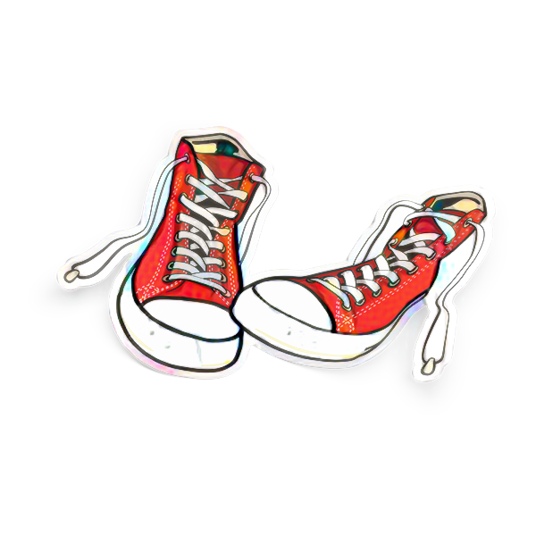

Estoy cansado de salir de noche y ver siempre la misma gente
Estoy flipando de que la gente se invente, cuente y luego reinvente
Apoltronado en el sofá de mi casa, vente se está caliente
Amaestrados vamos al mismo sitio todos aunque luego ni entres
Alucinando de que me miren de arriba a bajo como un delincuente
Intoxicado de que me pongan esa puta música indiferente
Quiero entrar en tu garito con zapatillas
Que no me miren mal al pasar
Estoy cansado de siempre lo mismo
La misma historia y quiero cambiar
Me da pena tanta tontería
Quiero un poquito de normalidad
Pero a ver, mírame, y dime tronco, no veo ni un sitio y no puedo aparcar
Estoy muy harto de que me digan: "si no estás en lista no puedes pasar
Solo entran cuatro, tenemos zona supermegaguay y nunca la verás"
Abarrotado, hay aforo limitado y ahora toca esperar
Y, y, nos han multado y tu coche se ha llevado la grua municipal
Quiero entrar en tu garito con zapatillas
Que no me miren mal al pasar
Estoy cansado de siempre lo mismo
La misma historia y quiero cambiar
Me da pena tanta tontería
Quiero un poquito de normalidad
Pero a ver, mírame, y dime tronco, no veo ni un sitio y no puedo aparcar
Ya has aparcado el coche y ahora busca lo del ticket de la hora
Y cuando vuelvas a ponerlo te habrán puesto una receta de recuerdo
Quiero entrar en tu garito con zapatillas
Que no me miren mal al pasar
Estoy cansado de siempre lo mismo
La misma historia y quiero cambiar
Me da pena tanta tontería
Quiero un poquito de normalidad
Pero a ver, mírame, y dime tronco, no veo ni un sitio
Quiero entrar en tu garito con zapatillas
Que no me miren mal al pasar
Estoy cansado de siempre lo mismo
La misma historia quiero cambiar
Me da pena tanta tontería
Quiero un poquito de normalidad
Pero a ver, mírame, y dime tronco
No veo ni un sitio y no puedo aparcar
